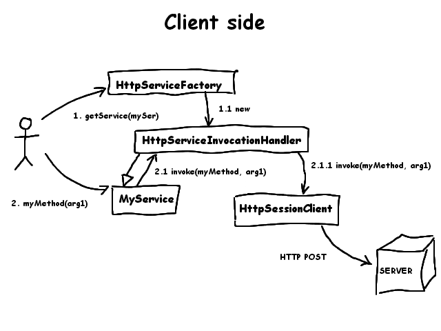
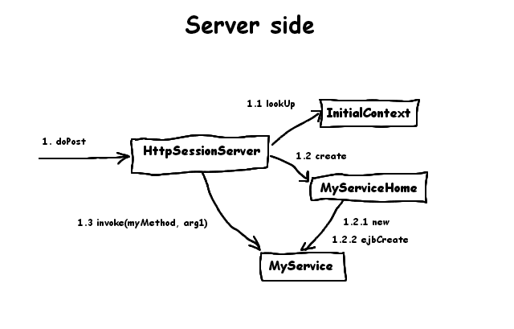

Overview
The Remoting is based on server and client classes.
On the client
On this tier, the goal is to transparently encapsulate the client calls in
HTTP. This is done with the use of Dynamic Proxies. They allow a class to
implements interfaces specified at runtime when the class is created. This
feature is perfect for our goal because all the remote invocations on EJBs
are based on interfaces.
The client sees its remote interface but in reality it is an instance of
HttpServiceInvocationHandler that receives the method calls. This class
then delegates the calls to the HttpSessionClient.
Configuration
The client sets the config parameters of the client session
by calling few method on the HttpServiceFactory :
HttpServiceFactory factory = new HttpServiceFactory();
factory.setPort(8080);
factory.setContext("myApp");
factory.setHost("localhost");
These parameters are then used by the HttpSessionClient to process the HTTP
requests
Interaction diagram

To retrieve a reference on a EJB interface, the client asks it to the
HttpServiceFactory :
MyService myService = factory.getService(new EJBDefinition(
"ejb/myJndiName", "test.MyServiceHome",
"test.MyService"));
The constructor of the EJBDefinition takes the jndi name, the home class name and
the remote class name as parameters. They are used on the server side to perform
the lookup and the narrowing.
The HttpServiceFactory use the remote class to create a dynamic proxy implementing
it. The client sees a remote interface of an EJB. When the client make a call on
this interface, the method and the parameters of the call are transmitted to the
HttpServiceInvocationHandler which delegates the call to the HttpSessionClient.
This class is responsible for the HTTP stuff. It maintains the session with the
server using url rewriting. It serializes the call as an Object Stream into the
http stream and handle the response. When the response is another EJB (for instance
a reference on statefull EJB) the object sent back by the server is an instance of
HttpServiceKey. The HttpSessionClient then creates a new dynamic proxy for the client
that implements the new EJB. In case of a serialized object or exception
the client receives it normally.
On the server

The HttpSessionServer servlet is responsible for handling the client calls.
It creates a session at first call. The session id is return to the client using
the jsessionid HTTP header.
The HttpSessionServer uses the EJBDefinition to lookup the EJBHome on the InitialContext
and create an EJB. It always uses a create method without argument.
Then it invocates the call using reflection. The result is sent back to the client using
the HttpOutputStream. If the result is another session EJB (stateful or stateless) the
reference on that EJB is kept in the user session and a HttpServiceKey is returned back
to the client. The HttpClientSession handles that key to creates the awaiting interface.